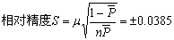

工作抽样的步骤和方法
第一步 确定调查目的与范围
调查目的不同，则项目分类、观测次数与方法均不相同。如以设备开动情况为调查目的，则还需明确调查的范围，是一台设备、几台设备，还是车间、全厂的所有设备；如以科室、库房工作人员的工作比率为观测对象，则还需明确是某个科室、库房，还是全厂科室、库房；如果确定某科室为调查观测对象：则还需进一步明确调查范围是该科室的一部分工作人员还是全部等。
第二步 调查项目分类
根据所确定的目的与范围，就可以对调查对象的活动进行分类，分类的粗细根据抽样的目的而定。如只是单纯调查机器设备的开动率，则观测项目可分为“工作”、“停工”、“闲置”三项，图10-4所示。如果进一步了解停工和闲置的原因，则应将可能发生的原因详细分类，以便进一步了解，如图10-5所示。
图10-4 设备调查项目分类
图10-5 操作人员调查项目分类表
抽样项目分类是工作抽样表格设计的基础，也是抽样结果达到抽样目的的保证。必须结合企业的实际调查目的而制定。
第三步 决定观测方法
在观测前，首先要绘制被观测的设备的操作者的平面布置图和巡回观测的路线，并注明观测的位置。图10-6为某工厂的机器与操作者的配置平面图。图中圆圈为观测机器的位置， ×为观测操作者的位置，带箭头的线条表示巡回路线。
图10-6 机器和工人配置图及巡回路线
第四步 设计调查表格
调查表格的内容和形式取决于调查的目的和要求，如表10-5。其仅能了解机器开动率与操作者的作业率，不能更进一步分析空闲的原因。表10-6是将其空闲项目加以细分的表格形式。
观测结束后进行汇总时应注意，表10-6中的操作者作业只有工作中、工作准备、搬运三项，其余的都是属于空闲或宽放的内容，因此计算总时间时，只要将前三项相加再被总观测次数除即可。
表10-5空闲时间分析
|
分类 |
操作 |
空闲 |
合计 |
操作率(%) |
|||
|
机器 |
1 |
正正正正正正 |
正正正正 |
30 |
20 |
50 |
60 |
|
2 |
正正正正正正正正 |
正正 |
40 |
10 |
50 |
80 |
|
|
3 |
正正正正正 |
正正正正正 |
25 |
25 |
50 |
50 |
|
|
操作者 |
1 |
正正正正正正 |
正正正正 |
30 |
20 |
50 |
60 |
|
2 |
正正正正 |
正正正正正正 |
20 |
30 |
50 |
40 |
|
|
3 |
正正正正正正正 |
正正正 |
35 |
15 |
50 |
70 |
|
表10-6空闲时间细分
|
分类 |
操 作 |
修 理 |
故障 |
停电 |
工作中 |
工作准备 |
搬运 |
等材料 |
商议 |
等检查 |
清扫 |
洗手 |
作业小计 |
操作率(%) |
|
|
机器 |
1 |
正正正 |
正 |
15 |
75 |
||||||||||
|
2 |
正正 |
正正 |
10 |
50 |
|||||||||||
|
3 |
正正正 |
- |
0 |
||||||||||||
|
操作者 |
1 |
正正 |
正 |
正 |
正 |
正 |
20 |
67 |
|||||||
|
2 |
正正正 |
正 |
正 |
正 |
20 |
67 |
|||||||||
|
3 |
正正 |
正 |
正 |
正 |
正 |
15 |
50 |
||||||||
第五步 向有关人员说明调查目的
为使工作抽样取得成功，必须将抽样的目的、意义与方法向被测对象讲解清楚，以消除不必要的疑虑，并要求操作者一定按平时的状态工作。
第六步 试观测并决定观测次数
正式观测前，需进行一定次数的试观测，按照调查的项目分类、观测方法、调查表格等进行。通过试观测，得出观测事项的发生率，然后根据前面介绍的公式计算正式观测次数及观测日数。
第七步 正式观测
正式观测前，还需决定每日每次观测的时刻。
(一)决定每日观测时刻
观测时刻的决定必须保证其随机性，这是工作抽样的理论依据，如观测时刻选择不当，将会产生观测偏差。决定观测时刻的方法有多种，如随机起点、等时间间隔法、分层抽样法、随机抽样法、重点(或高精度)观测法等，现通过实例介绍前两种方法。
1．随机起点等时间间隔法
观测实例：设在某厂的一个车间实施工作抽样。决定观测5日，每日观测20次，该车间是上午8时上班，下午5时下班，中间休息1小时(中午12时到下午1时)。可按下列步骤决定每日观测时刻。
步骤一：作两位数的乱数排列。较简单的方法是：以黄色纸片代表个位，取10张，上面分别写0、1、2、…9；以10张红色纸片代表十位，上面分别写0、1、2、3、…9。每次从不同颜色的纸片中随机地各抽出一张，记下数字。将抽出的放回，再各抽一张，如此反复抽取，即得乱数排列。设共抽15次，乱数排列如下：21、94、62、35、06、64、96、40、85、77、88、63、52、27、75。
步骤二：将此数列中小于50的数保留，大于50的则减50，保留其余额。21、44、12、35、06、14、46、40、35、27、38、13、02、27、25。
步骤三：去掉上述数列中大于30的数，得出：21、12、06、14、27、13、27、25。
步骤四：决定第一日的观测时刻，首先决定第一日第一次的观测时刻。取乱数排列的最前面数字21，因为8时上班，所以第一次观测时刻为8时21分。随后是决定每次观测的时间间隔，每日工作480min，减去第一次的21min，再除以每日的观测次数，得出时间间隔为（480min-21min）÷20=22.95≈23min
第二次的观测时刻为：
8时21分+23分=8时44分
第三次的观测时刻为：
8时44分+23分=9时07分
如此类推出第一天的20次的观测时刻。
步骤五：决定第二日的观测时刻，首先决定第二日第一次的观测时刻，取乱数排列的第二个数字12，于是第2天第一次的观测时刻为8时12分。
由于各次观测时间的间隔为23min，所以第二次的观测时刻为8时35分，第三次的观测时刻为8时58分。依次类推第二天的20次观测时刻。
步骤六：决定第三天到第五天的观测时刻。其方法同前，观测时刻见表10-7。
此法简单，时间间隔相等，利于观测人员掌握。不足之处在于除首次是由随机原理决定的观测时刻外，其余的观测时刻随机性不强。
表10-7观测时刻
|
观测日 |
1 |
2 |
3 |
4 |
5 |
|
|
乱数 |
21 |
12 |
06 |
14 |
27 |
|
|
观测起点 |
8时21分 |
8时12分 |
8时6分 |
8时14分 |
8时27分 |
|
|
观测间隔/min |
23 |
23 |
23 |
23 |
23 |
|
|
观 测 时 间 |
1 2 3 4 5 6 7 8 9 10 11 12 13 14 15 16 17 18 19 20 |
8：21 44 9：07 30 53 10：16 39 11：02 25 48 13：21 44 14：07 30 53 15：16 39 16：02 25 48 |
8：12 35 58 9：21 44 10：07 30 53 11：16 39 13：12 35 58 14：21 44 15：07 30 53 16：16 30 |
8：06 29 52 9：15 38 10：01 24 47 11：10 33 13：06 29 52 14：15 38 15：01 24 47 16：10 33 |
8：14 37 9：00 23 46 10：09 32 55 11：18 41 13：14 37 14：00 23 46 15：09 32 55 16：18 41 |
8：27 50 9：13 36 59 10：22 45 11：08 31 54 13：27 50 14：13 36 59 15：22 45 16：08 31 54 |
2．分层抽样法
例如某工厂车间白班安排如下：
上午 8：00—8：30 有30min工作准备及机器调整
8：30—11：45 195min工作
11：45—12：00 15min收拾
下午 1：00—1：15 有15min准备下午工作
1：15--4：30 195min工作
4：30--5：00 30min结束、清洁、打扫等
这样就必须按各段时间分别规定观测次数和观测时间，所以叫分层抽样。
假设每日需观测的总次数n=300次，每日8小时工作。其观测次数如下：
上午 8：00—8：30 为（30/480）×300次=19次
中午 11：45—12：00 为（15/480）×300次=10次
下午 1：00—1：15 为（15/480）×300次=10次
4：30—5：00 为（35/480）×300次=22次
上、下午工作时间 为（195+195）×300次/480=244次
以上两种方法可由实际情况选取。
(二)实地观测
观测人员按照规定的观测时刻及预定的抽样调查项目，将观测到的活动状态准确地记录在调查表格上。在记录的过程中切记主观武断，以表面现象下结论，要求耐心细致，深入现场，了解实际，尽可能准确。
第八步 整理数据作出结论
全部观测完毕后，观测人员必须整理分析记录表并进行以下工作。
(一)剔除异常值
经过观测记录之后，应根据记录数据绘制管理图，确定管理界限，然后将超过管理界限的异常值去掉。
管理界限是根据观测事项发生率，采用下式计算（三倍标准差法）：
式中， ：观测事项发生率的平均数；n：平均每日观察次数。
：观测事项发生率的平均数；n：平均每日观察次数。
管理图采用直角坐标图形，横坐标代表日期(或其他)，纵坐标代表观测事项发生率。按 、管理上限和下限分别找出平行于横轴的水平线，然后再将每日观测事项的发生率标注于图上，凡超出管理界限者，即为异常值，应剔除。
、管理上限和下限分别找出平行于横轴的水平线，然后再将每日观测事项的发生率标注于图上，凡超出管理界限者，即为异常值，应剔除。
例如：设观测结果如表10-8所示，即观测6个班，每班观测160次。
表10-8观测结果
|
观测班次 |
每班观测次数N |
工作次数 |
工作比率(%) |
|
1 |
160 |
129 |
80.63 |
|
2 |
160 |
142 |
88.75 |
|
3 |
160 |
124 |
77.50 |
|
4 |
160 |
125 |
78.13 |
|
5 |
160 |
119 |
74.38 |
|
6 |
160 |
120 |
75.00 |
|
合 计 |
960 |
759 |
79.06 |
将表10-8有关数字代入，即得管理界限。
平均工作比率 =0.7906
=0.7906
管理界限=0.7906±0.0966
管理上限=0.7906+0.0966=0.8872
管理下限=0.7906-0.0966=0.6940
据此作出管理图，见图10-7。

图10-7管理图
由图中可以看出，第2班的工作比率为88.75%越出上管理界限88.72%，应剔除。异常值剔除后，还需再次计算观测事件的平均发生率。新的观测事件平均发生率是否可靠，应根据原来确定的可靠度与精确度来考虑。
(二)核算观测次数和精度
剔除异常值对应的观测事项的次数（异常值去掉时，其相应的观测日数与次数均去除）之后，余下的观测次数是否达到观测的总次数。如已达到或超过即可，否则尚需继续观测。去除异常值对应的观测次数之后，按新的观测事件平均发生率计算的绝对精度与相对精度是否达到原定的精度要求。如已达到或超过，说明此平均发生率是可信的，否则尚需继续观测。为此需按下式计算精度。
式中μ=2。
仍举上例说明。上例中因为第二班的工作比率超过上管理界限，剔除之后，重新计算平均工作比率为：
按±5%的相对精度，求出观测次数：
剔除异常值后，余下的观测次数为800次，已大大超出现定次数。
计算绝对精度与相对精度：

原选择的绝对精度为±3%，相对精度为±5%，可以肯定观测有效。
第九步 作出结论改进工作
经上述步骤，并确认结果可信之后，就可得出结论。如观测对象的工作比率是否合适?负荷是否充分?人员多余还是不足等。做出结论之后，应分析研究原因，有针对性地提出改进方案。达到工作抽样能充分发掘人员与设备的潜力，提高企业经济效益。